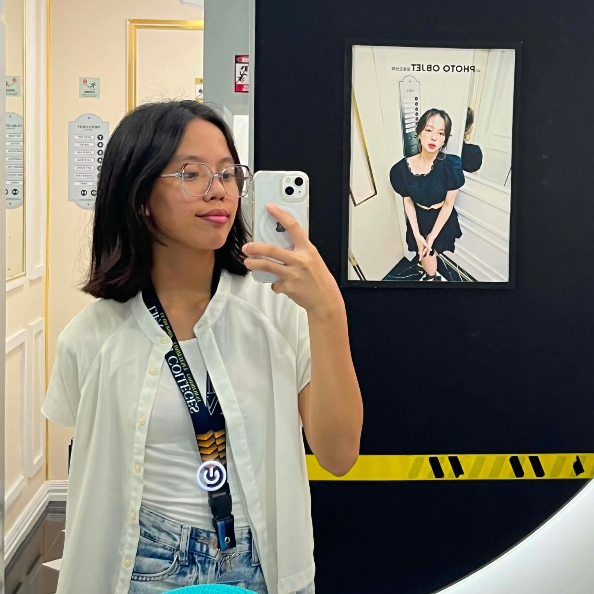

Elementary
Sto. Toribio Elementary School
// available for creative collaborations
Hi, I’m Lorraine Lasi Cabatic, a Computer Science student and an aspiring Computer Forensic Analyst with a passion for uncovering the story behind every data.
currently learning & building

I'm a 2nd year Computer Science student and DOST SEI Scholar at Lipa City Colleges, working toward becoming a Software Developer or a Computer Forensic Analyst. I believe great digital work is clear, purposeful, and built to uncover the truth behind the data.
Outside the classroom, I'm usually reading, watching crime documentaries, or playing games like chess and mobile games — habits that keep my curiosity sharp and my eye for detail even sharper. I'm always looking for the next challenge to learn from.
More about my journey →My academic journey has shaped my curiosity, discipline, and interest in technology.
Sto. Toribio Elementary School
The Mabini Academy
San Celestino Integrated National High School
Graduated among the top 5San Celestino Integrated National High School
Graduated among the top 5JPCS – LCC Chapter Secretary
2nd Semester Dean’s Lister
Consistent Honor Student
Math Club President
Student Athlete
ADL Young Master’s Quiz Bee Season 4 – 3rd Place
Math Oral Competition Champion, Grade 9 Level
Sample projects that show how I approach a brief: with curiosity, clarity, and a bias toward making.
web app / 2024
A calm productivity dashboard for students to organize tasks, focus sessions, and small wins.
View case study ↗brand / concept
A community platform concept connecting neighborhood makers with the people who want to support them.
View case study ↗lorraine_bot online
I can tell you about Lorraine's studies, skills, and contact details.
Have a project, question, or just want to say hello? My inbox is open.
lorrainecabatic.aine@gmail.com ↗ GitHub ↗
GitHub ↗ LinkedIn ↗
LinkedIn ↗ Instagram ↗
Instagram ↗